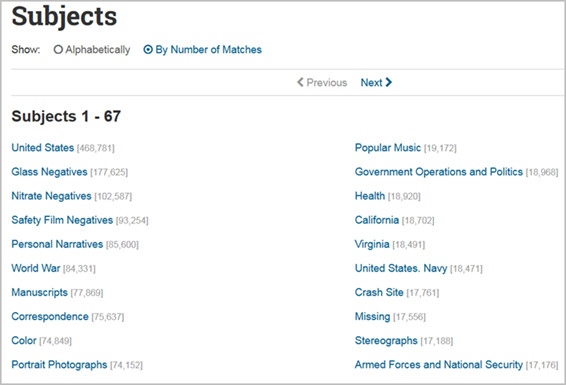
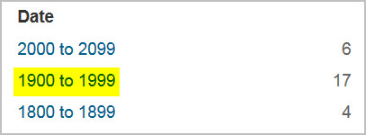

Portals, Collections, and Databases
A treasure trove of free baseball materials are available through the Library of Congress website. While some of these materials are scattered throughout the site (see the Features page for help locating them), several major portals, digital collections, and databases serve as gateways to the vast majority of the Library's online baseball content. These resources are described below, along with notable digital collections, databases, and catalogs not focused exclusively on baseball but which nevertheless include significant and historical primary sources about the game. Finally, this page includes a section on how to search across the Library's portals, collections, and other areas of the website for baseball resources using the Library's main search engine.
Baseball Portals
Themed Resources: Baseball
This guide, available through the Library's Teachers pages, includes a wealth of primary sources, lesson plans, exhibition and presentation items, curricular activity ideas, and other educational resources that can be used in the classroom to study American culture and values through the lens of baseball. Because the guide links to many baseball materials available on the Library's website and also offers suggested search terms for locating additional items in the Library's digital collections, it is useful not only to teachers and students, but to anyone interested in locating online baseball resources at the Library.
[Table of Contents]
Major Digital Baseball Collections
The Library's digital collections provide access to primary source materials such as letters,
diaries, photographs,
maps, sound recordings, and video recordings that serve as a record of
American history and culture. The following digital collections constitute the major online baseball collections available through the Library of Congress. To learn more about baseball materials available in other digital collections, go here.
Baseball Cards (from the Benjamin K. Edwards Collection)
This collection from the Library's Prints & Photographs Division presents a Library of Congress treasure—2,100 early baseball cards dating from 1887 to 1914. The cards show such legendary figures as Ty Cobb stealing third base for Detroit, Tris Speaker batting for Boston, and pitcher Cy Young posing formally in his Cleveland uniform. Other notable players include Connie Mack, Walter Johnson, King Kelly, and Christy Mathewson.
Cigarette card collector Benjamin K. Edwards preserved these baseball cards in albums with more than 12,000 other cards on many subjects. After his death, Edwards' daughter gave the albums to noted poet and Lincoln biographer Carl Sandburg, who donated them to the Library's Prints and Photographs Division in 1954.
To explore an alternative interface to this collection, go here.
Baseball Sheet Music
This presentation features hundreds of pieces of sheet music from the Library's Music Division that reference baseball from the late nineteenth century to the early twentieth century. Many of the items shown represent the earliest widely-distributed baseball collectibles; the value of these objects lies both in their music and lyrics as well as in their elaborately illustrated covers, which furnish a factual and cultural history of our national game, its fans and their heroes. The related exhibit, Baseball’s Greatest Hits: The Music of Our National Game, helps situate this sheet music within its historical and cultural contexts. A selection of additional baseball music found in the Music Division's physical holdings is listed in Baseball’s Greatest Hits: An Annotated Bibliography of Baseball Music and Songs at the Library Of Congress.
Branch Rickey Papers
The approximately 1,750 baseball scouting reports from the 1950s and 1960s presented here are part of the papers of Branch Rickey (1881-1965), best known as the executive who broke Major League Baseball's color line by signing Jackie Robinson to the Brooklyn Dodgers roster in 1947. By that date, however, Rickey had already built an impressive career as a player, manager, and baseball executive, which eventually earned him a place in the National Baseball Hall of Fame in Cooperstown, New York. The scouting reports, which are located in a series of baseball files in the Rickey collection, were compiled between 1951 and 1964. They are mostly concentrated in the years 1951-1956 and 1962-1963, while Rickey was associated, respectively, with the Pittsburgh Pirates and St. Louis Cardinals.
By Popular Demand: Jackie Robinson and Other Baseball Highlights, 1860s-1960s
2007 marked the 60th anniversary of Jackie Robinson's rookie season for the Brooklyn Dodgers. When he stepped onto Ebbets field on April 15th, 1947, Robinson became the first African American in the twentieth century to play baseball in the major leagues -- breaking the "color line," a segregation practice dating to the nineteenth century. Jackie Robinson was an extremely talented multi-sport athlete and a courageous man who played an active role in civil rights. This presentation was created to commemorate his achievements and describe some aspects of the color line's development and the Negro Leagues. Materials that tell his story, and the history of baseball in general, are located throughout the Library of Congress.
The Spalding Base Ball Guides, 1889 to 1939
The Spalding Base Ball Guides, 1889-1939 comprises a historic selection of Spalding’s Official Base Ball Guide and the Official Indoor Base Ball Guide. The collection reproduces 35 of the guides, which were published by the Spalding Athletic Company in the late nineteenth and early twentieth centuries. Spalding’s Official Base Ball Guide was perhaps the premier publication of its day for the game of baseball. It featured editorials from baseball writers on the state of the game, statistics, photographs, and analysis of the previous season for all the Major League teams and for many of the so-called minor leagues across the nation. The 15 Spalding’s Official Base Ball Guides included in this online collection were published between 1889 and 1939. The Official Indoor Baseball Guide concerns a game unfamiliar to most contemporary baseball fans because its demise occurred almost beyond living memory. These guides, too, offer rules and “how-to’s” of the game, information on the game’s founding fathers, photographic illustrations of teams and players from across the land, and game statistics. The 20 Official Indoor Base Ball Guides included in this collection were published between 1903 and 1926.
[Table of Contents]
Other Digital Collections of Note (non-baseball collections)
The Library digital
collections provide access to primary source materials such as letters,
diaries, photographs,
maps, sound recordings, and video recordings that serve as a record of
American history and culture. This section identifies select digital collections, excluding those mentioned above, that include
baseball-related resources. For many collections, baseball-related subject
headings or suggested keywords are
provided. Click on any subject heading or keyword to access
a list of items in the collection available through it.
Collection: America at Work, America at Leisure: Motion Pictures from 1894 to 1915
Content: Includes an 1898 Thomas Edison video, "The ball game."
Collection: American Life Histories: Manuscripts from the Federal Writers' Project, 1936 to 1940
Content: Search on the keywords baseball and base ball to find a number of life histories discussing the game.
Collection: American Notes: Travels in America, 1750 to 1920
Content: A number of narratives that discuss or mention baseball can be found by conducting a full-text search on the terms baseball and base ball. Selecting the Text option for any item link will allow you to browse for the section(s) of each narrative that discuss the game.
Collection: The American Variety Stage: Vaudeville and Popular Entertainment, 1870-1920
Content: Includes several scripts under the subject heading athletics -- baseball.
Collection: Frontline Diplomacy: The Foreign Affairs Oral History Collection of the Association for Diplomatic Studies and Training
Content: A full-text search on baseball returns several interviews with diplomats in which they recollect early baseball memories or instances involving baseball during their diplomatic service.
Collection: Music for the Nation: American Sheet Music, ca. 1870 to 1885
Content: Includes sheet music for "The Base Ball" (1874).
Collection: Newspaper Pictorials: World War I Rotogravures, 1914-1919
Content: Searches on baseball and base ball return several photographs and advertisements from the New York Times and New York Tribune.
Collection: Omaha Indian Music
Content: Includes several images of baseball games and a recording of an emcee introducing a famous Omaha baseball pitcher.
Collection: Printed Ephemera: Three Centuries of Broadsides and Other Printed Ephemera
Content: Searches on baseball and base ball return several items.
Collection: Prosperity and Thrift: The Coolidge Era and the Consumer Economy, 1921-1929
Content: Several photographs can be found by searching on the keyword baseball.
Collection: Sports Byline
Content: A collection of recorded sports interviews originally broadcast on the radio network program Sports Byline USA, hosted by Emmy Award-winning broadcaster Ron Barr, between 1988 and 2003. More than 20 interviews are currently available for listening on a streaming basis, and more programs will be added. Baseball players whose interviews are currently available online include Mickey Mantle, Hank Aaron, Willie Mays, and Jose Canseco.
Collection: The Stars and Stripes: The American Soldiers' Newspaper of World War I, 1918 to 1919
Content: Many articles about baseball can be found by searching on the keyword baseball or on individual or team names.
Collection: Tending the Commons: Folklife and Landscape in Southern West Virginia
Content: Three audio recordings can be found through a keyword search on baseball.
Collection: Theodore Roosevelt: His Life and Times on Film
Content: Includes two videos of President Theodore Roosevelt at Oriole Park.
Collection: Voices from the Dust Bowl: the Charles L. Todd and Robert Sonkin Migrant Worker Collection, 1940 to 1941
Content: Includes one image of a baseball game at the Tulare Migrant Camp, Visalia, California (1940).
Collection: Words and Deeds in American History: Selected Documents Celebrating the Manuscript Division's First 100 Years
Content: Includes Branch Rickey's scouting report on Don Drysdale (June 15, 1954).
Collection: Working in Paterson: Occupational Heritage in an Urban Setting
Content: Four photographs can be found under the subject heading Baseball players.
In addition to the above digital collections, there are many other digital collections that may feature baseball-related materials on the Library's website. For suggestions on using the Library's main search engine to locate additional materials in other digital collections and across the rest of the Library's website, see "Using the Library's Search Engine."
[Table of Contents]
Databases and Catalogs of Note
In addition to digital collections, the Library provides access to larger databases and catalogs. These resources comprise millions of items that exceed the more limited scope and size of specific digital collections, and in the case of the Prints and Photographs Online Catalog, also allows searching across multiple digital collections focused on images. These resources are discussed below. For details on how to search the Library's main online catalog, please see the page "Searching the Online Catalog."
Chronicling America
Chronicling America is a free, national, searchable database of historic American newspaper pages published between 1789 and 1924. Through Chronicling America users can search more than 11 million digitized newspaper pages to trace the early history of baseball as documented by the American press.
The Library's Newspaper and Current Periodical Reading Room has created three topic guides, drawing upon the content in Chronicling America, related to baseball:
Baseball's World Series, 1903- 1922
Highlights newspaper articles about the World Series in Chronicling America and provides suggested search terms for locating other relevant articles.
Bloomer Girls: All-girls Novelty Act Sweeps Country Playing Baseball
Highlights newspaper articles about bloomer girls (all-women baseball teams who typically played against amateur, semi-pro, and minor league men's teams) in Chronicling America and provides suggested search terms for locating other relevant articles.
The Chicago "Black Sox" Scandal
Highlights newspaper articles about the Black Sox scandal in Chronicling America and provides suggested search terms for locating other relevant articles.
The Emergence of Babe Ruth
Highlights newspaper articles covering the career of Babe Ruth from Boston Red Sox star pitcher to New York Yankees prolific slugger.
Suggested Search Terms
General terms: baseball, base ball, World Series, town ball
Individuals: Connie Mack, Fielder Jones, Cy Young, Ty Cobb, Honus Wagner, Christy Mathewson, Mordecai Brown, Frank Chance, etc.
Teams: Pittsburg Pirates (note that the spelling "Pittsburgh" did not occur until 1920), Boston Americans, New York Giants, Philadelphia Athletics, Chicago White Sox, Chicago White Stockings, Chicago Cubs, Detroit Tigers, etc.
[Table of Contents]
Prints and Photographs Online Catalog
The Prints and Photographs Online Catalog (PPOC) provides access through group or item records to about 75% of the Prints and Photographs Division's holdings, as well as to some images found in other units of the Library of Congress. More than 1.2 million digital are available. PPOC provides an opportunity for users to unearth a visual history of baseball in America through photographs of teams, players, managers, coaches, stadiums, and fans.
PPOC includes one major baseball collection:
Baseball Cards (from the Benjamin K. Edwards Collection)
This collection presents a Library of Congress treasure -- 2,100 early baseball cards dating from 1887 to 1914. The cards show such legendary figures as Ty Cobb stealing third base for Detroit, Tris Speaker batting for Boston, and pitcher Cy Young posing formally in his Cleveland uniform. Other notable players include Connie Mack, Walter Johnson, King Kelly, and Christy Mathewson.
Cigarette card collector Benjamin K. Edwards preserved these baseball cards in albums with more than 12,000 other cards on many subjects. After his death, Edwards' daughter gave the albums to noted poet and Lincoln biographer Carl Sandburg, who donated them to the Library's Prints and Photographs Division in 1954.
Note: The Library's baseball card collection is the subject of Peter Devereaux's book Game Faces: Early Baseball Cards from the Library of Congress (Smithsonian Books, 2018).
Other collections of note include:
Collection: Ansel Adams's Photographs of Japanese-American Internment at Manzanar
Content: Includes two images of Japanese Americans observing an amateur baseball game.
Collection: Detroit Publishing Company
Content: Nine photographs can be found through a keyword search on baseball.
Collection: Gottscho-Schleisner Collection
Content: Five images of baseball fields and school baseball games can be found through a keyword search on baseball.
Collection: Horydczak Collection
Content: Includes photographs under the subject headings Baseball, Baseball players, Stadiums, and Crowds.
Collection: Farm Security Administration/Office of War Information Black-and-White Negatives
Content: includes more than 180 images are returned through a keyword search on baseball.
Collection: Historic American Buildings Survey/Historic American Engineering Record/Historic American Landscapes Survey
Content: A keyword search on baseball returns several records for baseball fields, stadiums, and facilities, including Shibe Park.
Collection: Panoramic Photographs
Content: Relevant subject headings include Baseball, Baseball players--1920-1930, Stadiums, Sports spectators, and World Series (Baseball). Also try searching on keywords such as baseball, individual and team names, National League, American League, and several headings on the World Series.
Suggested Search Terms
General terms: baseball, base ball, World Series
Individuals: Connie Mack, Cy Young, Ty Cobb, etc.
Teams: Boston Americans, New York Giants, Philadelphia Athletics, Chicago White Sox, Chicago White Stockings, Detroit Tigers, etc.
Browsing by Subject and Format
Use the catalog's online thesaurus to locate appropriate subject headings related to baseball. Each subject heading is hyperlinked; selecting the heading will result in the display of all images under that heading in the catalog. Examples of headings include baseball, baseball players, and baseball managers.
The catalog also includes a subject browse option through which users can browse headings for baseball-related subject headings.
Users should also check the bibliographic records of relevant images to see whether they have been assigned subject headings. These subject headings will also be hyperlinked and will lead to other images assigned the same heading. For example, this image of Babe Ruth includes two relevant subject headings, Ruth, Babe,--1895-1948, and Baseball players--1920, that will lead to other images or Ruth and baseball players from the 1920s, respectively.
Users can browse the collections of Prints and Photographs Online Catalog by format as well. Baseball-related formats that can be searched include:
Finally, several selections of baseball images from the Prints and Photographs Division can be found through Pictorial Americana, an online version of a 1955 Library publication.
Images available within the Prints and Photographs Online Catalog, along with additional images found in image-based collections available through divisions through the Library, can also be searched through the Library-wide digital collections interface. See "Using the Library's Search Engine" for tips on using this interface.
[Table of Contents]
Using the Library's Search Engine
Most of the Library's free online portals, collections, and databases, with the major expection of the Chronicling America historic newspapers database, can searched through the Library's primary search engine, located on the Library's home page as well as at https://www.loc.gov/search/.
The Library's search engine takes advantage of "faceted searching," which allows users to refine the results of an initial keyword search, or to browse for content, using various categories of information (facets) related to items in the Library's physical and online collections. To view available facets, go to https://www.loc.gov/search/ and examine the options in the "Refine your results" column at the left of the page:
Major facets available include Original Format; Online Format; Date; Location; Part of; Contributor; Subject; Language; and Access Condition. Under each major facet are numerous, more specific facets that you can select to narrow a results set. The default for search results is to display materials available online. Select "All Items" to change the list of results to include records for items in the Library's physical collections as well.
Browsing by Facet for Baseball Materials
When using the main search page to locate baseball materials, you do no need to enter an initial keyword search in order to begin refining results by facet. You can immediately start browsing by facet and locate materials without ever needing to conduct a keyword search.
The most important major facet for identifying baseball-related material on the Library's website is the Subject facet:
Select "More Subjects" at the bottom of this facet to open up a larger list of subjects:

This larger list of subjects is arranged by number of matches, from the subject with the most available items to the subject with the least. You can browse this list to find subjects related to baseball—select "Alphabetically" to search for subjects that begin with a specific word or phrase, such as Ruth, Babe. Searching alphabetically on "Baseball" will bring you to a page listing all subjects that begin with that term:
You can select a specific heading to be brought to a list of items assigned it.
Searching by Keyword, then Refining by Facet
Rather than beginning your search by using the "Refine your results" facts, you can begin with a keyword search and then refine the results returned by facet. For example, you can search across the Library's website on the keyword baseball by entering the term into the search box at the top the main search page (or other Library pages):
The results page will return a list of items available online that include the term baseball in their records or full text. If you want to see a list of subjects assigned to all of these matching items, find the "Subject" facet under the "Refine Your Results" options and select "More Subjects." Here is the resulting page:
The default arrangement is by number of matching items, though the list can be sorted alphabetically as well. Once you find a subject in which you are interested, select it to be brought to a list of items on the Library's website assigned that subject that also include a match on the keyword baseball. For example, if you are interested in baseball songs and music, select the Songs and Music heading:
This will bring you to a results page listing items in the online collection that include a match on the keyword baseball and have been assigned the subject Songs and Music:
You can browse this list of results or resort them using the "View" option. If you want to further refine your results, you can again use the facets available from the "Refine your results" column at the left. For instance, if you want to narrow your results to songs published in 1908, go to the Date facet and select "1900-1999":

Once you select this date range, the facets listed under Date will automatically adjust to present a refined list of dates from which to choose, this time by decade:
When you choose a decade, the list will again be refined, this time by individual year. After selecting "1900 to 1909" you can then choose "1908 to 1908" from the more refined list of Date facets to be brought to the one item in our online collections that matches a search for items published in 1908 assigned the subject Songs and Music and whose text or record includes the keyword baseball:
Granular Searching by Facet
When searching or limiting results by facet, keep in mind that the same facet, such as Date or Subject, can often be refined multiple times. For example, if you begin you search by limiting content to the subject Baseball, you can return to the Subject facet to find a newly refined list of subject facets will include more granular subjects from which to choose:
Clicking on the "More Subjects" link will open the complete listing of refined subject facets from which you can choose. You can refine results by two, three, or more Subject facets, and combine that search with other facets (e.g., Location and Date) as you browse for content.
Leveraging the power of faceted searching from the Library's faceted search home page, as well from the main Subject page for baseball, you can quickly and efficiently mine much of the Library's online baseball-related content to find exactly the types of resources in which you are interested.
Search Help
For more help on using the Library's main search box and faceted search options, review the Library's Search Help page, which gives tips on several search techniques, including how best to search the site by keyword.
[Table of Contents]
|